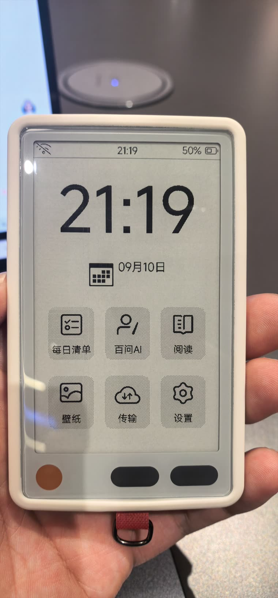
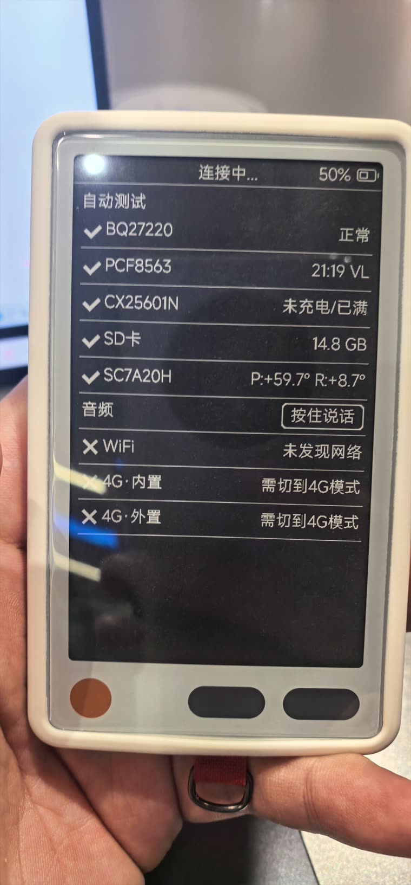
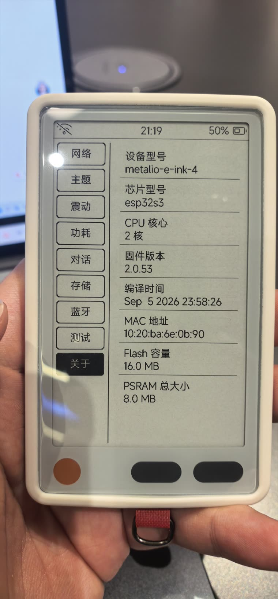

我不熟悉儿童神经。以前遇到复杂的神经病例，主任讲疾病、脑电、基因、鉴别诊断，我大部分时间只能听。
现在不一样了。我可以先用指南和循证工具补齐背景，形成自己的判断和问题，再去找主任讨论。
AI 没有替我成为主任。但它让我第一次有能力，带着自己的思考参与讨论。
于是我开始想：如果这种能力不是一次性的，而是能随着每一个病例留下来，会发生什么？
李帅帅 · 儿科医生 × AI Builder
把病例、循证证据、上级医生经验和个人知识沉淀连接起来，让每一次临床工作，都成为下一次能力。

为什么是我
我不熟悉儿童神经。以前遇到复杂的神经病例，主任讲疾病、脑电、基因、鉴别诊断，我大部分时间只能听。
现在不一样了。我可以先用指南和循证工具补齐背景，形成自己的判断和问题，再去找主任讨论。
AI 没有替我成为主任。但它让我第一次有能力，带着自己的思考参与讨论。
于是我开始想：如果这种能力不是一次性的，而是能随着每一个病例留下来，会发生什么？
一个结构性问题
在美国，顶尖临床 AI 已经开始进入医生工作场景，结合患者完整的病历资料辅助医生工作。但在中国，真实病历和患者隐私有严格的数据边界——我的场景大量涉及儿科，未成年人、基因、影像、检查结果，这些不是删掉姓名和住院号就结束的问题。
所以真正的问题不是「医生要不要用 AI」，而是：怎样让 AI 在不把真实病历交出去的前提下，真正理解医生每天面对的患者。
病历留在本地，问题去寻找世界。
去身份化不等于绝对安全：年龄、罕见病、基因、日期等组合信息仍可能重新识别个体。因此外部调用遵循最小必要原则，且本方案不构成任何安全承诺。
产品内核
不是替医生思考，而是帮助医生形成越来越好的思考。
普通医学 AI：提问 → 答案
我在做的：病例 → 成长
它怎么工作
医患沟通、查房、主任讨论、交班、病历、检查、检验、图片、文献、语音。
这个病人有什么问题？我现在的判断是什么？我遗漏了什么？我哪里不懂？
指南、文献、循证工具、科室知识库、个人知识库。
在查房、主任请示、MDT、病例讨论之前做好准备。
留下的不是患者隐私，而是医学知识、临床经验、主任反馈、决策逻辑、我犯过的错。
每一次病例，都成为下一次临床能力的起点。
病历生成只是采集层的一个入口，不是产品本身。
项目 01 · 旗舰
一个挂在医生身上的临床工作入口：提醒今天该做什么，也让一次查房、一次讨论、一个临床问题能够进入个人 AI 工作流。


计划接入本地 AI 工作站进行 ASR、医学纠错和病例理解。整条链路跑通之前，不作为已实现能力对外描述。
项目 02 · 03
把医学规则、交互设计、AI 和产品真正结合起来。这不只是 Demo，而是另一种「临床知识产品化」。
医学规则 × AI × 产品交互
面向孤独症儿童的数字化疗愈游戏，已有真实家庭内测与奖项验证。它证明我也能从一个儿童医疗真实问题出发，把产品做给真实用户使用。
儿童医疗问题 × 产品化 × 真实用户验证
小雪宝、小安 AI 健康助手、AI 新青年 OPC 收录在项目库与 Build in Public，不占首页篇幅。
数据边界
语音转写、图像识别、文书生成全部跑在本机工作站，患者资料不出本机。
仅当需要循证检索时才向外请求，且先做去身份化与最小化处理。
所有生成内容需医生本人审核确认后使用，AI 不替代医师判断。
本站与本项目不提供任何形式的在线诊疗服务。
Builder 方法论
我不是从模型出发寻找医疗场景，而是从每天真正遇到的临床问题，倒着决定哪里该用 AI。
临床需求 / 产品设计 / 硬件定义 / 工程实现 / 医学内容审核
三甲医院儿科医师 · 童医魔盒科技服务有限公司 · 黑客松获奖 · 联合共建伙伴：极新（北京思维进步科技有限公司）
合作
如果你也在想「AI 到底该怎么进入中国医生的日常工作」，我们可以从一个小而真实的场景开始验证。